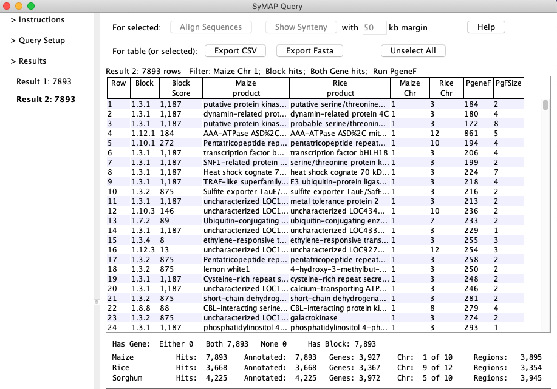

|
Following is a quick tour of the many displays and features available through SyMAP.
Contents
The Chromosome Explorer allows you to select multiple chromosomes from different species and
view their alignment using several views: 3D (shown here); dot-plot; circular;
and side-by-side.
Chromosomes, and a reference chromosome, are selected through the lefthand panel, and the desired alignment view is shown to the right.
Below is an example showing three chromosomes from Maize, Rice, and Sorghum against Maize chromosome 9.
The 3D view, shown here, is available in the standalone Java application (not over the web). It shows a
three-dimensional display of the syntenic regions ("synteny blocks") for
selected chromosomes against the reference chromosome. Inverted blocks are shown in green.

The multi-species dot plot shows the selected chromosomes aligned against the reference (top axis). Here
Maize chromosomes 6 and 8, and Sorghum chromosomes 3 and 9, are aligned against Rice chromosome 1, clearly showing
the pattern of duplications. Synteny blocks are outlined in blue, and one can click to zoom further and
arrive at a more detailed side-by-side display.

The Dynamic Circular display shows a circular view of the synteny blocks between
selected chromosomes. (The method of selecting chromosomes is the same as for the 3D view.)
Below is an example for Rice against Sorghum.
This is the initial display when launching the Java Explorer through the web. (The web
displays also include a static version of the circular display which shows all chromosomes
for a single pair of species.)

The Block View shows a chromosome-level view of the
synteny blocks for one organism aligned against the chromosomes of another organism.
It is available both through the web and in the standalone Java application.
Below is an example for Sorghum against Rice.

The synteny blocks are colored by chromosome (see color key at top) and
clicking on a chromosome track leads to the single-chromosome view shown below:

This view shows the individual synteny blocks in more detail; clicking on a block
leads to the side-by-side display.
The Side-by-side view shows regions of two chromosomes aligned as below. This view allows access to full
details of the alignment, including each individual anchor and annotation.

Each individual anchor point (a.k.a. "hit", generated by MUMmer or BLAT)
is shown as a brown line between chromosomes. Zooming in further one
can see the exon-level annotation, with yellow description box,
and the detailed anchors connecting these genes.

It is possible to zoom in even further and see a basepair-level view
of the region, with Needleman-Wunsch alignments generated on the fly:

SyMAP v4.2 includes powerful search features to help make the most of synteny information.
Aligned regions across the selected species are automatically grouped into "putative gene
families". The filters allow you to locate the families of interest based on annotation,
level of synteny, and presence or absence in different lineages.

The query results table has full flexibility in column selection, column ordering,
and save/reload of searches. For example if you find an interesting family that is
not annotated, you can easily save all the relevant sequences as a fasta file for further study.

The hits are grouped into gene families.
The PgeneF number is a unique number assigned to the gene family.
The PgFSize number is how many unique instances are in the family.
The #RGN tells how many times the gene occurs for the species.
Example: For PgeneF=1 of PgFSize=2, Medicago #RGN=1 and its two Start coordinates are about the same, whereas Soybean #RGN=2 and its Start coordinates are on different chromosomes.

Another unique option is to send the selected sequences directly to Muscle for multiple
alignment, to reveal the patterns in the sequence alignments between the species.
SyMAP parses and displays the MUSCLE (Edgar 2004 NAR:32) results:

A full-featured manager enables the creation, alignment, update, and viewing of any number
of species projects with only a single external configuration file giving database information:

|